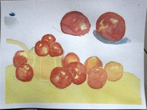
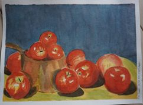

My Journal
The quiet ramblings from the static of my mind
> ~*~*~*~*~*~*~*~*~*~*~*~*~*~*~*~*~*~*~Sunday, January 2, 2022
A Study in Two Mediums
Click play for audio
 

* If you are interested in which books I used to explore water colour, below is a list with links:
- How to do Water Colors by Walter Foster (I may refer to this video for reference of the other WTF books)
- Water-colour: How to do it! By Henry Gasser, N.A.
- How to Paint in Water-colour by Jose M. Paragon and G. Fresquet
Thursday, November 25, 2021
Building a Website from Scratch
Click play for audio